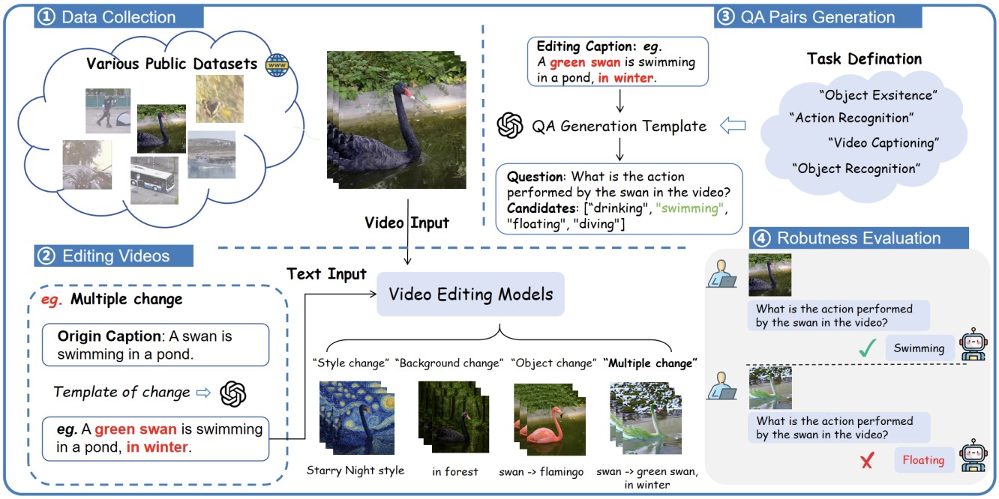

|
Yinuo Jing (井一诺) I am a PhD candidate at the Pattern Recognition and Intelligent System Laboratory, School of Artificial Intelligence, Beijing University of Posts and Telecommunications, Beijing (100876), China. I am supervised by Prof. Zhanyu Ma. My research interests are in: Multimodal Large Models, Video Understanding, and Animal Behavior Recognition. |
Publications

|
EthoCLIP: Ontology-Enhanced Video-Language Pretraining for Animal Behavior Understanding
Yinuo Jing, Jinyan Wu, Zixi Yang, Kongming Liang, Xiatian Zhu, Zhanyu Ma. CVPR 2026 code An ontology-enhanced framework that incorporates structured knowledge to improve video-language pretraining for animal behavior understanding. |

|
Animal-CLIP: A Dual-Prompt Enhanced Vision-Language Model for Animal Action Recognition
Yinuo Jing, Kongming Liang, Ruxu Zhang, Hao Sun, Yongxiang Li, Zhongjiang He, Zhanyu Ma. IJCV 2025 paper / code A dual-prompt framework improving fine-grained alignment between visual and textual representations for animal action recognition. |

|
Animal-Bench: Benchmarking Multimodal Video Models for Animal-centric Video Understanding
Yinuo Jing, Ruxu Zhang, Kongming Liang, Yongxiang Li, Zhongjiang He, Zhanyu Ma, Jun Guo. NeurIPS 2024 paper / code A large-scale benchmark with 40K+ samples for evaluating multimodal models in animal-centric video understanding. |

|
Category-Specific Prompts for Animal Action Recognition
Yinuo Jing, Chunyu Wang, Ruxu Zhang, Kongming Liang, Zhanyu Ma. ACM MM 2023 paper / code Introduces category-specific prompt learning to enhance animal action recognition and zero-shot generalization. |
|
 |
RO-Bench: Robustness Evaluation of Multimodal Large Models
Zixi Yang, Jiapeng Li, Muxi Diao, Yinuo Jing, Kongming Liang. ICASSP 2026 paper A large-scale robustness benchmark using counterfactual video generation for evaluating multimodal models. |